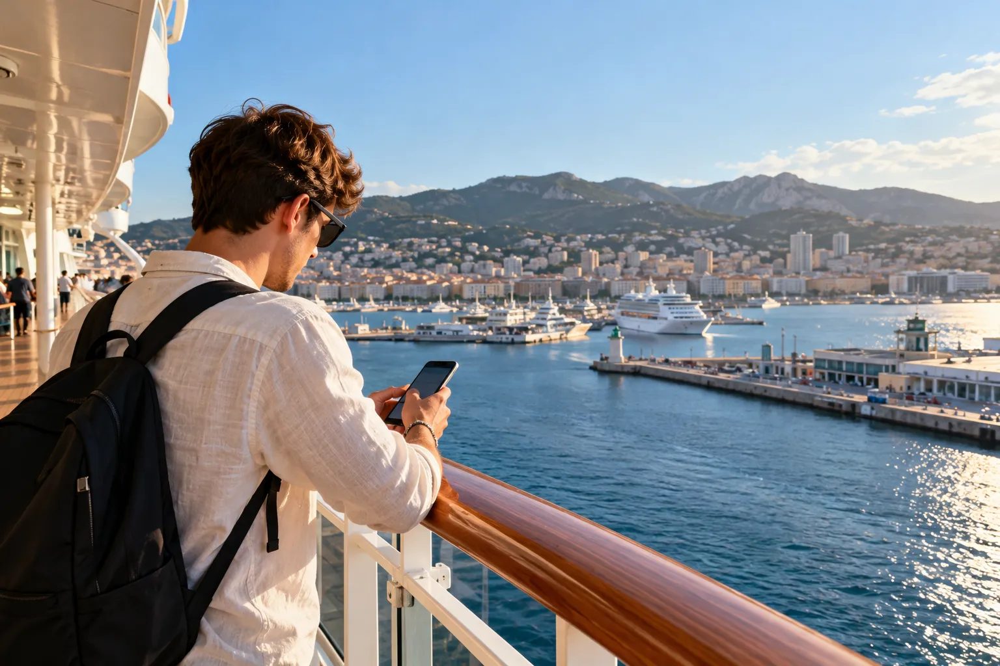
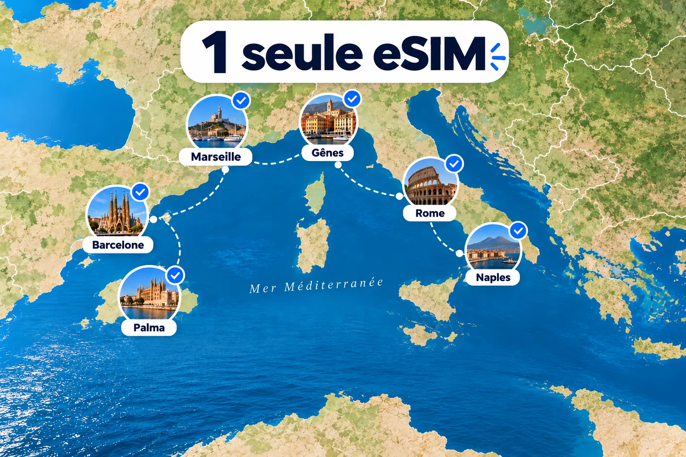
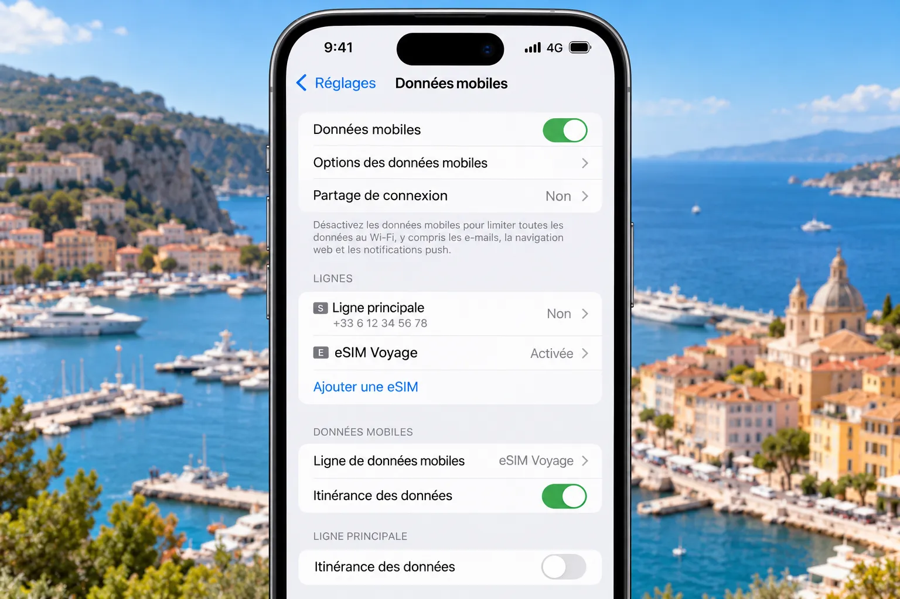

Accueil › Blog › Internet en croisière
Guide croisière 2026Internet en croisière : quelle eSIM choisir en 2026 ? 🚢
Internet en croisière, c'est surtout une affaire d'escales : c'est là que vous consultez vos messages, ouvrez Google Maps et partagez vos photos. Et pour rester connecté à chaque port sans surcoût, l'eSIM est la solution la plus simple et la moins chère. Voici comment la choisir, combien de Go prévoir, et quelle eSIM prendre selon votre itinéraire.

⚡ La réponse courte
- Dans les ports : une eSIM vous donne de la 4G/5G locale, rapide, pour quelques euros sur toute la croisière.
- La meilleure stratégie : une eSIM régionale (Europe, Caraïbes…) qui couvre toutes vos escales, installée avant le départ.
- En mer : aucune eSIM classique ne capte au large, c'est normal. Les jours de navigation, profitez du bateau !
- À éviter absolument : laisser le roaming de votre forfait habituel actif en mer.
📡 Comment fonctionne internet sur un bateau de croisière ?
Pour choisir la bonne solution, il faut comprendre une chose : il n'existe pas un, mais deux « internets » en croisière.
🌊 En mer : pas d'antenne, pas de souci
Dès que le paquebot s'éloigne des côtes, votre téléphone ne trouve plus d'antenne mobile. C'est normal : en pleine mer, il n'y a tout simplement aucun réseau terrestre à portée.
La bonne nouvelle, c'est que vous n'avez pas besoin de connexion les jours de navigation. En croisière, l'essentiel de l'usage se concentre sur les escales : quelques heures à terre, avec cartes, réservations d'excursions, photos et messages à envoyer.
⚓ Dans les ports : le réseau mobile local
À quai ou près des côtes, votre téléphone retrouve les antennes 4G/5G terrestres, exactement comme à l'hôtel. C'est là que l'eSIM fait la différence : vous payez des données locales au prix local, sans option payante à bord.
⚖️ eSIM ou roaming : le comparatif
Deux options s'offrent à vous dans les ports : garder le forfait de votre opérateur ou installer une eSIM de voyage. Les prix sont des ordres de grandeur : ils varient selon l'offre et la date d'achat.
| Critère | Roaming de votre opérateur | eSIM de voyage |
|---|---|---|
| Coût | Inclus dans les ports UE (avec limites), très cher en mer et hors UE | Quelques euros à ≈ 25 € pour toute la croisière |
| Où ça marche | Ports et côtes (+ réseau maritime en mer) | Ports d'escale et côtes, selon les pays inclus |
| Vitesse | 4G/5G locale | 4G/5G locale |
| Risque de facture | 🔴 Élevé | 🟢 Aucun (forfait prépayé) |
| Idéal pour | Dépannage ponctuel dans les ports de l'UE | Rester connecté à chaque escale sans mauvaise surprise |
Notre conclusion : pour la grande majorité des croisiéristes, une eSIM installée avant le départ est le meilleur rapport confort/prix : un budget fixé d'avance, une connexion rapide à chaque escale et aucune surprise sur la facture.
📲 Quelle eSIM choisir pour une croisière ?
Toutes les eSIM ne se valent pas en croisière. Voici les 6 critères à vérifier avant d'acheter.
- La couverture de TOUTES vos escales. Dressez la liste des pays de votre itinéraire et vérifiez que chacun figure dans l'offre. C'est le critère n°1.
- Régionale plutôt que pays par pays. Quand vous visitez 4 à 6 pays en une semaine, une eSIM régionale (Europe, Caraïbes…) est bien plus simple et moins chère que plusieurs eSIM.
- Le volume de données. Prévoyez large (voir plus bas) : un forfait trop petit oblige à une recharge, au pire moment.
- Le début de validité. Idéalement, la durée démarre à la première connexion au réseau, pas à l'installation. Vous pouvez ainsi installer l'eSIM chez vous sans perdre de jours.
- Le partage de connexion. Utile pour dépanner un proche ou connecter une tablette. Certaines offres le limitent.
- Un support en français. Si l'activation coince le jour de l'escale, vous serez content de pouvoir écrire à quelqu'un.
🔍 Pas sûr de votre téléphone ?
Il doit être compatible eSIM et débloqué. Vérifiez-le en 30 secondes sur notre page téléphones compatibles eSIM.
🗺️ Quelle eSIM selon votre itinéraire ?
🇪🇺 Croisière en Méditerranée
C'est la destination reine, et la plus simple à équiper : une eSIM Europe couvre Espagne, France, Italie, Grèce, Croatie, Malte, etc. Attention aux escales hors Union européenne (Turquie, Tunisie, Maroc, Albanie, Monténégro…) : elles ne figurent pas toujours dans les offres Europe. Vérifiez la liste des pays avant de payer.
👉 Comparez les offres dans notre guide meilleure eSIM pour l'Europe.
🏝️ Croisière aux Caraïbes
Chaque île a son réseau, et le roaming est coûteux. Privilégiez une eSIM Caraïbes ou multi-pays qui couvre vos ports réels (Bahamas, Saint-Martin, Jamaïque, Mexique…). Nous détaillons tout dans notre guide dédié : meilleure eSIM pour une croisière dans les Caraïbes.

📊 Combien de Go faut-il prévoir pour une croisière ?
Bonne nouvelle : vous ne consommez de la data que les jours d'escale. En mer, votre téléphone ne télécharge rien. Voici des ordres de grandeur de consommation :
| Usage | Consommation approximative |
|---|---|
| Messagerie (texte, WhatsApp) | Quelques Mo par heure |
| GPS / cartes | Quelques dizaines de Mo par heure |
| Réseaux sociaux, photos | 100 à 500 Mo par heure |
| Appel vidéo | 0,5 à 1,5 Go par heure |
| Streaming vidéo | 0,5 à 3 Go par heure selon la qualité |
En pratique, voici la quantité à viser par jour d'escale selon votre profil :
- 🧘 Déconnecté (messages + GPS) : ≈ 0,5 Go par escale.
- 📸 Occasionnel (photos, réseaux sociaux) : ≈ 1 Go par escale.
- 📱 Très connecté (vidéo, partage de connexion) : ≈ 2 Go ou plus par escale.
Exemple : 6 escales en usage occasionnel, soit ≈ 6 Go. Prenez un forfait de 10 Go pour garder de la marge.
🧮 Pas sûr de la quantité de données ?
Utilisez notre calculateur de données de voyage : indiquez votre durée et vos usages, il estime le forfait idéal.
⚙️ Installer son eSIM avant l'embarquement
Une eSIM s'installe en quelques minutes, mais il faut une connexion pour le faire. Ne vous y prenez donc pas le jour de l'embarquement à quai, ni à bord.
- Vérifiez la compatibilité de votre téléphone (et qu'il est débloqué).
- Achetez l'eSIM quelques jours avant, en vérifiant la liste des pays d'escale.
- Installez-la chez vous, en wifi, en scannant le QR code reçu par e-mail.
- Nommez la ligne « Croisière » et choisissez-la pour les données mobiles. Gardez votre ligne habituelle pour les appels et SMS si vous le souhaitez.
- Désactivez l'itinérance de données sur votre ligne principale (Réglages › Données mobiles sur iPhone, Réseau mobile sur Android).
- Activez l'eSIM à l'arrivée au premier port : la période de validité démarrera à ce moment-là.

⚠️ Les 5 pièges à éviter
1. Laisser le roaming actif en mer
C'est le piège n°1. En haute mer, votre téléphone peut s'accrocher à un réseau maritime par satellite. Ces réseaux ne sont pas couverts par le règlement européen sur l'itinérance, et peuvent donc être facturés très cher par votre opérateur, même pour quelques minutes (règle expliquée par la Commission européenne). En cas de doute, activez le mode avion en mer.
2. Oublier que l'eSIM ne retire pas la ligne principale
Retirer votre carte SIM physique ne désactive pas une eSIM de votre opérateur : elle reste active. Une voyageuse a ainsi reçu plus de 900 € de facture, lire l'histoire dans Facture de roaming à 900 € : le piège de l'eSIM.
3. Se tromper sur la couverture des escales
Une eSIM « Europe » n'inclut pas forcément la Turquie, la Tunisie ou la Norvège. Comparez la liste des pays à votre itinéraire, escale par escale.
4. Choisir un forfait trop petit
Le plus petit forfait est tentant, mais une recharge sur un quai bondé est pénible. Mieux vaut prendre la taille supérieure.
5. Laisser les applis consommer en arrière-plan
Sauvegardes cloud, mises à jour automatiques et téléchargements de photos peuvent vider votre forfait dès la première escale. Coupez-les ou limitez-les au wifi.
🛡️ Checklist avant de monter à bord
- ✅ eSIM installée et nommée « Croisière »
- ✅ Données mobiles réglées sur l'eSIM
- ✅ Itinérance désactivée sur la ligne principale
- ✅ Mises à jour automatiques en wifi seulement
- ✅ Mode avion prêt à être activé en mer
🚢 Et les eSIM « spéciales croisière » ?
Quelques fournisseurs vendent des eSIM qui basculent sur le satellite de certains navires en mer. L'idée est séduisante, mais elle ne fonctionne que sur les navires partenaires. Vérifiez que votre navire figure sur la liste : sinon, une eSIM classique qui couvre vos escales suffit et coûte moins cher. Pour approfondir, consultez nos guides : eSIM pour la croisière et la terre et meilleure eSIM pour les navires de croisière.
🔎 Trouvez votre eSIM pour la croisière
Comparez les forfaits qui couvrent vos escales, vérifiez les prix du jour et profitez de nos codes promo.
Notre avis sur les fournisseurs
Avant de choisir, lisez les avis détaillés de nos équipes sur les fournisseurs les plus populaires : Airalo, Holafly, Yesim ou Roamic. Retrouvez aussi tous nos meilleurs fournisseurs d'eSIM.
❓ Questions fréquentes sur internet en croisière
L'eSIM fonctionne-t-elle en pleine mer ?
Non, pas avec une eSIM classique. Au large, aucune antenne mobile terrestre n'est à portée. L'eSIM est efficace dans les ports d'escale et le long des côtes, là où se concentre l'essentiel de l'usage en croisière.
Quelle est la meilleure eSIM pour une croisière en Méditerranée ?
Une eSIM Europe qui couvre tous les pays de vos escales. Vérifiez les escales hors Union européenne (Turquie, Tunisie, Albanie, Monténégro…). Comptez environ 1 Go par jour d'escale. Comparez les offres dans notre guide eSIM Europe.
Pourquoi choisir une eSIM plutôt que le roaming de mon opérateur ?
Une eSIM de voyage est un forfait prépayé : le budget est fixé à l'achat, sans risque de facture surprise. Le roaming peut être limité en volume, coûteux hors Union européenne (Turquie, Tunisie, Albanie, Monténégro…) et très cher en mer.
Puis-je utiliser mon forfait mobile français en croisière ?
Dans les ports de l'UE, oui, au tarif national. Mais en mer, le téléphone peut s'accrocher à un réseau maritime non couvert par le règlement européen, facturé très cher. Désactivez l'itinérance des données ou passez en mode avion.
Combien de Go faut-il pour une croisière d'une semaine ?
Entre 3 et 10 Go pour la plupart des voyageurs : 0,5 à 2 Go par jour d'escale. Les jours en mer ne consomment rien si vous restez hors connexion. Affinez avec notre calculateur de données.
Quand installer son eSIM avant une croisière ?
Quelques jours avant le départ, chez vous et en wifi. Activez-la ensuite le jour de l'embarquement ou à la première escale : la validité démarre souvent à la première connexion au réseau.
Une eSIM « spéciale croisière » vaut-elle le coup ?
Seulement si elle est compatible avec votre navire. Sinon, une eSIM classique qui couvre vos ports d'escale suffit et coûte moins cher.
Mon téléphone est-il compatible eSIM ?
La plupart des smartphones récents le sont : iPhone XS et ultérieurs, Samsung Galaxy S20 et ultérieurs, Google Pixel 3 et ultérieurs. Il doit aussi être débloqué. Consultez la liste complète.
🎯 Conclusion : la stratégie gagnante pour votre croisière
Pour avoir internet en croisière sans exploser votre budget : installez une eSIM qui couvre toutes vos escales avant le départ, désactivez l'itinérance sur votre ligne habituelle, et profitez de chaque port connecté sans mauvaise surprise. Bonne croisière ! 🌅
Prêt à vous connecter pour votre prochaine croisière ?
Comparez toutes les eSIM en quelques clics et trouvez la plus adaptée à votre itinéraire.
Pour aller plus loin
- eSIM pour la croisière et la terre
- Meilleure eSIM croisière Caraïbes
- Le meilleur eSIM pour voyager
- Facture de roaming à 900 € : le piège de l'eSIM
Suivez MyBestSim 📲
Astuces de voyage, bons plans eSIM et nouveautés : retrouvez-nous sur nos réseaux.
Cet article contient des liens d'affiliation : MyBestSim peut percevoir une commission si vous achetez via nos liens, sans surcoût pour vous. Les prix cités sont des ordres de grandeur relevés en 2026 et susceptibles de changer : vérifiez toujours l'offre avant d'acheter. Mise à jour du 17 octobre 2026.